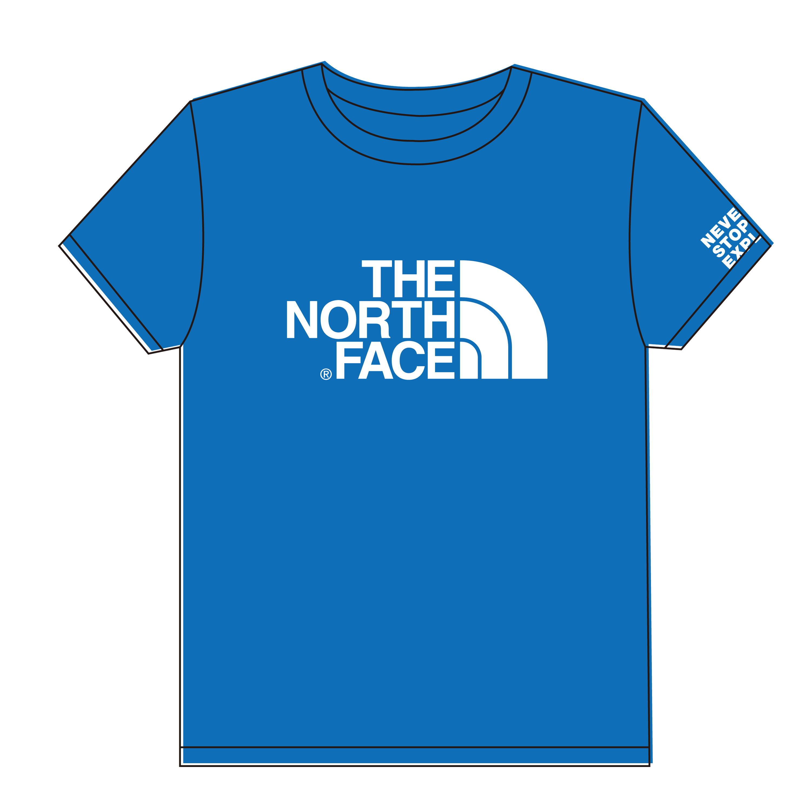

The North Face selected Suejinjou not only because of its natural beauty, but also because of its proximity to Jiufen and Jinguashi located on the slopes of the volcanic mountains. There are incredible landscapes, ancient cities amongst mountains and seas, coal mining heritage, historical sites, museums, the Yin-yang Sea of a distinct colour, the famous street that inspired the movie "Spirited Away", markets and more to be discovered by all the athletes, friends, and families.
HIGHLIGHT
INTRODUCTION
Date: 2019/04/20 (Saturday) ~ 04/21 (Sunday)
● Time: 11:00~15:30
● Check-in: Quanji Temple Parking Lot (No.53 Qitang Road, Ruifang District, New Taipei City)
● Event content:
You will get an orienteering map for enjoying Suejinjou. The map will show the special places we carefully selected in Jinguashi and Jiufen and we assure you that the event content will not let you down. Just find the designated locations on the map and go to the store to punch holes on the map with the punchers of different shapes in order to collect points. You can get a small gift according to the final score and participate in the lucky draw.
REGISTRATION NOTICE
● Fee: NT$100 per group
- Applicants can decide the number of groups to purchase
- Minimum 1 person and maximum 6 persons per group
● Registration requirements: Children under 15 years old and at least one parent to accompany the children.
● Difficulty: Low. Beginners are welcomed!
All groups that visit the designated locations and collect points will participate in the lucky draw of The North Face limited edition products with a total value of 200,000 yuan.
- Participants will receive aTNF100 commemorative gift.
- Participants will be given a T-shirt with The North Face logo (in groups, random style or colour).
Without experiencing these real local cultures, a trip to Jiufen and Jinguashi is incomplete. Explore with us now!
- Participants will be given a commemorative T-shirt with The North Face logo (in groups, random style or colour).

Participants will be given a T-shirt with The North Face logo
(in groups, random style or color).
| CM | S | M | L |
| Chest | 97 | 104 | 112 |
(in groups, random style or color).
COURSE
Date: 2019/04/20 (Saturday) ~ 04/21 (Sunday)
Time: 11:00~15:30
Check-in: Quanji Temple Parking Lot (No.53 Qitang Road, Ruifang District, New Taipei City)
Activity details and schedule:
-
Get the map and activity guides at check-in counter during the specified time period.
-
Plan your own route during the allotted time and go to collect the points at the designated locations on the map.
-
An orienteering flag and a red puncher are available at each checkpoint; leave a record on the activity card.
-
Participants must return to the venue at 15:00 at the latest to check their scores. Prizes are awarded to those who have between 10 and 25 points.
-
All participants can join the lucky draw!
|
Time |
Activities |
Remarks |
|
11:00~14:00 |
Open to get the map |
|
|
15:00 |
Points settlement |
Participants must return to the venue at 15:00 at the latest to check their scores. |
|
15:30 |
Lucky draw |
All participants can join the lucky draw! |
POSITION
Activity details and schedule: When taking the free shuttle buses please show the official TNF bracelet for identification.
|
The Gold Museum |
Jiufen |
|
The Gold Museum to Jiufen |
Jiufen to the Gold Museum |
|
Departure time |
Departure time |
|
11:00 |
11:30 |
|
12:00 |
12:30 |
|
13:00 |
13:30 |
|
14:00 |
14:30 |
|
15:00 |
15:30 |
|
16:00 |
16:30 |
SIGN UP